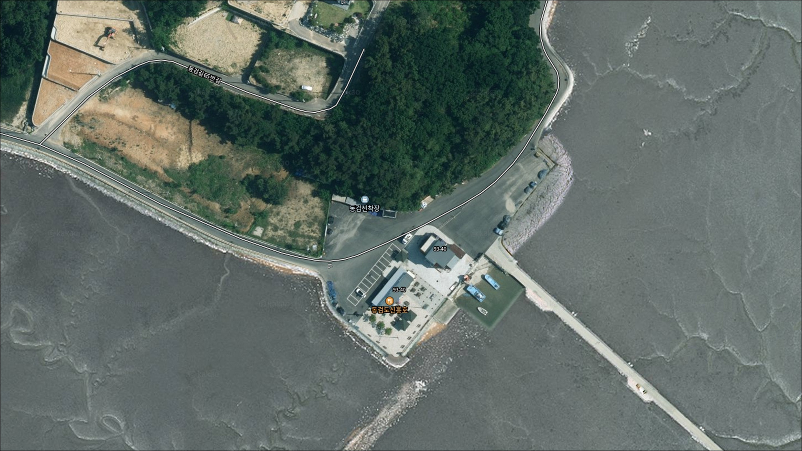
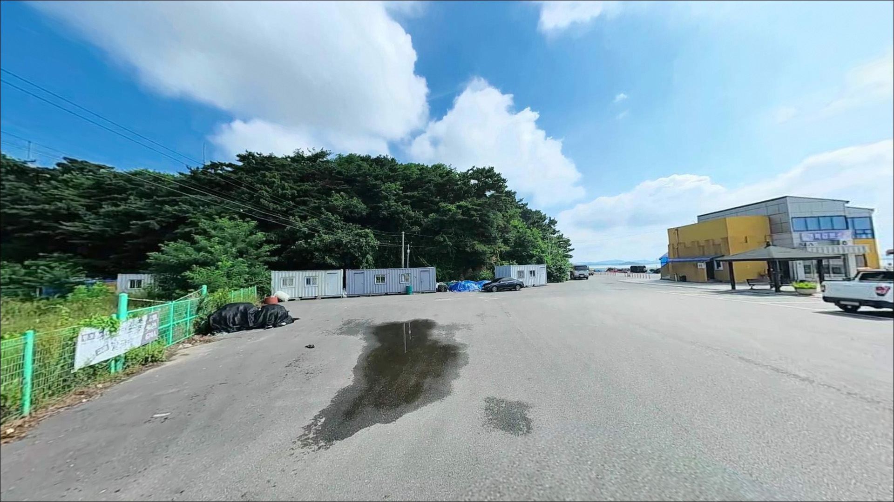
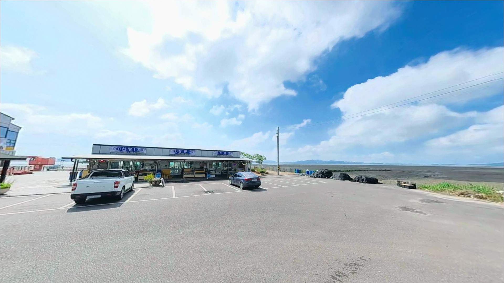
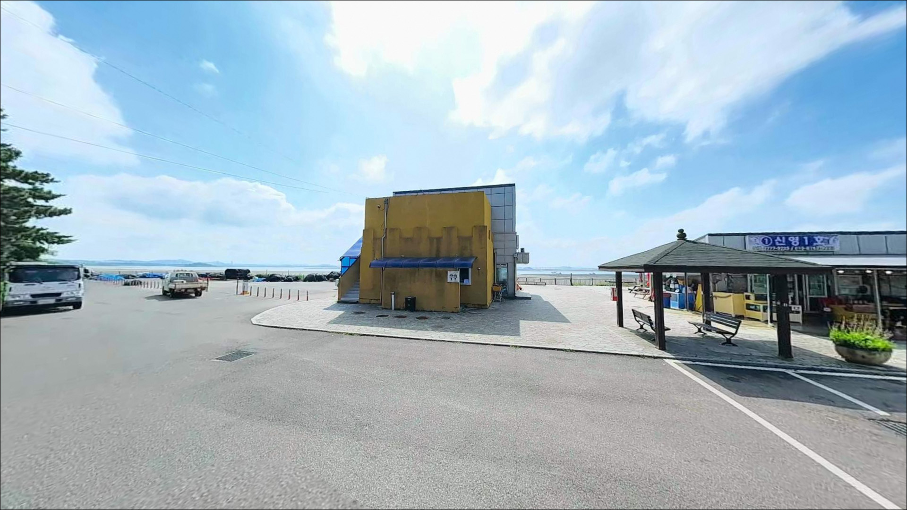
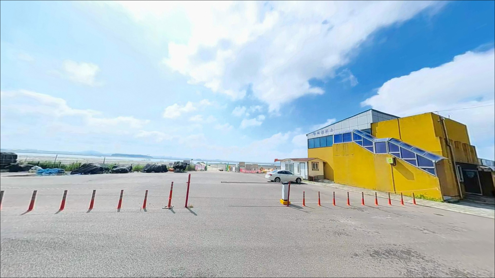
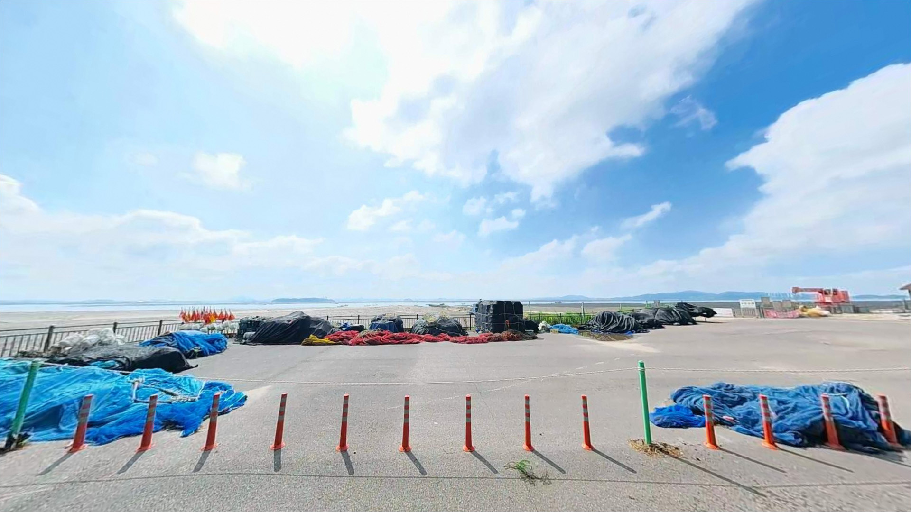
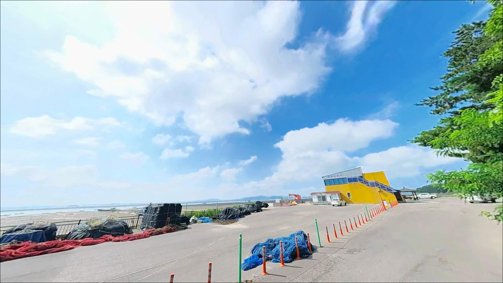
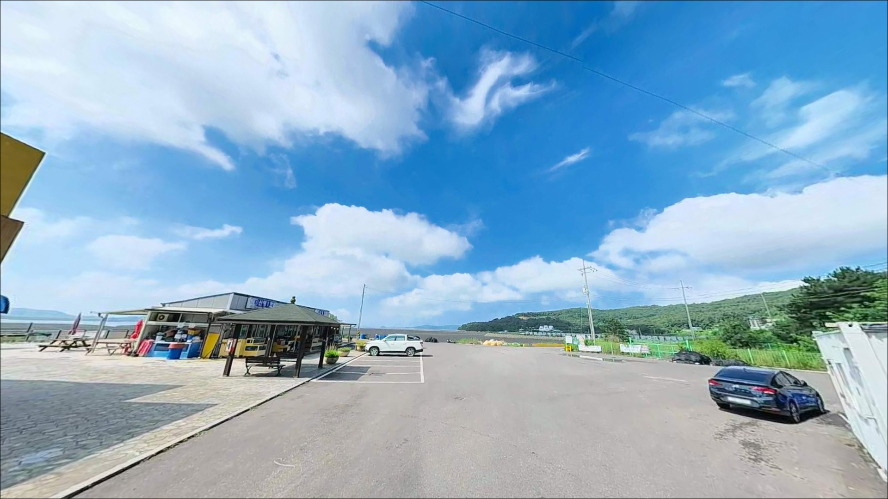
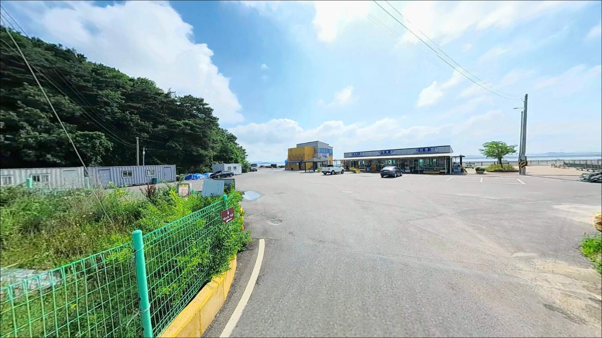

이 페이지에는 광고(제휴 링크 포함)가 있으며, 광고 링크를 통해 구매하면 운영자가 판매 수익 또는 수수료를 받을 수 있습니다. 포인트 사진: 카카오맵 스카이뷰·로드뷰. 이 페이지의 지도·사진 이미지는 카카오맵의 실제 서비스 이미지와 다를 수 있습니다.

동검선착장
인천 강화군 길상면 동검리 109-2
물때 확인 없이 동검선착장을 찾으면
낚싯대를 던질 수면이 없습니다.
간조 시 갯벌이 넓게 드러나는 서해형 지형이라,
썰물 시간대에 도착하면
선착장 앞이 갯벌로 바뀌어 있는
상황이 벌어질 수 있습니다.
동검도는 강화도 남쪽에 붙은 작은 섬으로,
육지와 도로로 연결되어
배 없이 차량으로 바로 들어갈 수 있습니다.
선착장 구조는 소규모 어촌형이며,
주변은 넓은 갯벌과 완만한 해안선이
이어지는 전형적인 서해 내만형 지형입니다.
이 글은 동검선착장의
물때 판단 기준, 진입 환경, 낚시 여건,
차박 체류 조건에 집중합니다.
조황 단정이나 특정 어종 보장은
이 글의 범위에 포함되지 않습니다.

동검도는 강화도 길상면 남쪽에 위치한 연륙도입니다.
강화 본섬에서 동검길을 따라 차량으로 진입할 수 있어
접근 자체의 문턱은 낮은 편입니다.
포장도로가 연결되어 있어
비포장이나 급경사 구간은
크게 걱정하지 않아도 됩니다.
다만 섬 내부 진입로는
폭이 좁아지는 구간이 포함된 편입니다.
대향 차량과 교행 시 여유가 없는 구간이 있어,
대형 SUV나 캠핑 장비를 실은 차량이라면
진입 전에 경로를 미리 살펴보는 것이
안전합니다.
선착장 끝단에서의 회차는 가능한 것으로 보이나,
주변 공간이 넉넉하지 않은 소형 어촌 선착장 구조입니다.
주차는 선착장 진입부 공터나
어구 적재 공간 인근을 이용하는 방식이 일반적이며,
어선 이동 동선을 막지 않는 자리가
기본 기준입니다.

동검선착장은 차박 포인트로 거론되는 곳이지만,
선착장 자체의 주차 공간이 그리 넓지 않습니다.
방문 후기에서 이미 다수의 캠핑카와
텐트가 자리를 차지하고 있었다는 언급이 있어,
주말이나 성수기에는 일찍 도착하지 않으면
자리 확보가 어려울 수 있습니다.
야간에는 주변 민가 밀집도가 낮고
어선 작업 외 차량 이동이 적은 편입니다.
소규모 어촌 마을 분위기라 조용한 편이지만,
가로등 수가 많지 않을 가능성이 있어
개인 조명 장비는 필수입니다.
인근에 펜션들이 분포하고 있어
완전한 고립 환경은 아닌 편입니다.
서해 특성상 바람 영향을 받는 날에는
체류 여건이 급변할 수 있습니다.
서풍이 강해지면 파고가 빠르게 높아지므로,
기상 예보를 당일 출발 전
다시 한번 확인하는 것이
헛걸음을 막는 가장 단순한 방법입니다.

동검도는 소규모 섬입니다.
반경 3km 이내에 대형 편의점이나 마트를
기대하기 어려운 환경입니다.
식수, 미끼, 채비 소품, 연료 모두
강화 본섬에서 보급을 마친 뒤
완전 자급 체제로 진입하는 것이
현실적인 준비 방식입니다.
동검도 어촌체험관에 공중화장실이 있습니다.
위치는 동검리 109-2 일대로
선착장과 인접한 구조입니다.
강화 본섬으로 나가면
편의점, 식당, 주유소 등
기본적인 생활 인프라를 이용할 수 있습니다.
선착장 인근에는
동검레저바다낚시터(길상면 동검리 110번지)가
운영 중으로, 노지 낚시 여건이 여의치 않을 때
유료 바다낚시터로 대안이 됩니다.

동검선착장 방문 전에 가장 먼저 확인할 것은
물때입니다.
서해 강화도 일대는 조수간만의 차가
서해에서도 특히 큰 해역에 속합니다.
간조 시에는 갯벌이 넓게 드러나
낚싯대를 던질 수면 자체가 사라지는
상황이 벌어집니다.
들물 초입~중들물 구간이
이 포인트에서 가장 유효한 낚시 시간대입니다.
들물 초입에 채비를 던질 수 있는 타이밍이
동검선착장에서 가장 유효한 낚시 구간입니다.
바다타임에서 동검리 또는 강화 남단 기준 물때를
미리 확인하고 출발 시각을 역산하는 것이
이 포인트를 제대로 활용하는 기본 전략입니다.
조류가 강한 사리 전후에는
봉돌이 밀려 채비 컨트롤이 어려워집니다.
15호 이상 봉돌을 준비해 두는 것이 좋으며,
조류 방향에 맞춰 채비를 조정하는 여유가
낚시 결과에 영향을 줍니다.
야간 낚시 시에는 구명조끼와
헤드랜턴을 반드시 챙겨야 합니다.

동검선착장 주변은 서해 내만형 갯벌 지형입니다.
조간대 비중이 높아 간조 시 바닥이 드러나는 구간이 많고,
만조 때 수심이 깊지 않을 가능성이 있습니다.
다만 선착장 끝단과 선박 통로 주변은
수심 변화 구간이 형성될 수 있어
수심이 유지되는 구간을 먼저 파악하는 것이
자리 선정의 핵심입니다.
조류는 강화도와 영종도 사이 수로 영향을 받아
들썰물에 따른 흐름이 뚜렷한 편입니다.
바닥 저질은 펄과 모래가 섞인 구조로
갯지렁이를 이용한 낚시에 잘 맞는 환경입니다.
선착장 주변에 테트라포드 구간이
일부 존재한다는 이야기도 있어,
볼락이나 우럭 계열의 은신처로
활용될 가능성이 있습니다.
서해 갯벌 선착장형 포인트에서
기대해볼 수 있는 어종으로는
망둥어, 숭어, 감성돔, 농어 정도가 꼽힙니다.
가을에는 쭈꾸미 조황이 올라오는 경우가 있다는
이야기도 있습니다.
조황은 물때와 계절에 따라 편차가 크므로
가기 전에 최신 동향을 검색해 보시기 바랍니다.

이 포인트에서 가장 기본이 되는 방식은
원투낚시입니다.
갯벌형 서해 선착장 구조에 가장 잘 맞고,
갯지렁이를 미끼로 들물 초입 타이밍에
채비를 멀리 보내 바닥층을 공략하는 패턴이
이 해역에서 통하는 방식입니다.
도다리나 붕장어를 기대해볼 수 있는
계절 타이밍도 있습니다.
찌낚시도 시도해볼 만합니다.
선착장 끝단 주변 수심이 있는 구간에서
들물 흐름이 살아있는 타이밍에
반유동 채비로 접근하는 방식이 어울립니다.
숭어나 감성돔을 대상으로
조류 흐름을 활용한 채비 운영이
이 포인트 구조에 맞는 스타일입니다.
루어낚시도 선택지에 넣을 수 있습니다.
강화도 일대는 농어 루어낚시가
이루어지는 해역으로 알려져 있습니다.
선착장 외곽 구간을 바이브레이션 계열로 탐색하거나,
가을 시즌에는 쭈꾸미를 노린
에기 채비도 병행해볼 수 있습니다.
활성도가 높은 타이밍을 먼저 잡는 것이 중요합니다.

동검선착장에서 자리 여건이나 낚시 조건이
여의치 않을 때 가장 먼저 이동할 곳은
초지항입니다.
강화도 남단 대표 항구로,
망둥어 원투낚시 포인트로 알려져 있으며
주차 여건이 상대적으로 넉넉한 편입니다.
동검도에서 차로 10~15분 거리입니다.
황산도 인근에는
황산초지바다낚시터가 운영 중입니다.
관리형 수상낚시터로 시설이 갖춰져 있어
노지 낚시가 어렵게 느껴질 때
대안으로 고려해볼 수 있는 선택지입니다.
동검선착장과 같은 갯벌 해역이라
물때 패턴은 유사하게 적용됩니다.
강화 본섬 서남쪽 광성보~장어마을 일대 해안선도
포인트가 길게 이어지는 구간입니다.
강화대교에서 초지대교 방향으로
좌측 해안을 따라 주차 공간이 곳곳에 있어,
당일 플랜B 이동 동선으로
미리 파악해두기 좋은 구간입니다.

서해 생활낚시를 즐기는 낚시인이라면
동검선착장의 지형 조건은 친숙한 환경입니다.
갯벌과 수로가 만드는 구조 속에서
원투낚시를 중심으로
찌낚시와 루어를 병행하는 방식이
이 포인트에 잘 맞습니다.
반면 물때 확인 없이 도착하거나,
주말에 늦게 들어가면
자리가 없거나 수면이 사라진 상황을
만날 수 있습니다.
물때 확인, 봉돌 준비, 사전 보급,
이 세 가지를 갖추고 이른 시간에 입장하는 것이
동검선착장을 제대로 활용하는 방식입니다.
진입로 확인 없이 대형 차량으로 진입하면
선착장 앞 좁은 구간에서 회차가 어려울 수 있습니다.
조용한 어촌 마을 선착장 옆에서
들물 소리를 들으며 밤을 보내는 차박 여행자라면,
물때 한 번만 제대로 맞춰 가면
낚시와 차박을 함께 챙길 수 있는 포인트입니다.